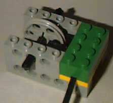

Robbert
Mattijs
van Mattijs, Stef en Robbert Mientki
april 2001
| Lego-Knex
Robbert Mattijs |
Lego Rotation Sensors
van Mattijs, Stef en Robbert Mientki april 2001 |

| from Boulette's Robotics |
| Malcolm S Powell |  |
| Pete Sevcik
(Techno-stuff) |
|
| from Michael
Gasperi,
totally build from Lego parts, it uses 2 touch sensors |
|
Philo
 |
Mark
Dresser, Hall effect rotation sensor
| Simen Svale Skogsrud
Fiber Optic System |
| Lego Polarity switch,
from Michael Brandl |
 |
form Michael
Gasperi
The interface for the Rotation sensor looks just like the Light sensor.
About 8V is applied for 3ms and then a voltage is read while 5V is applied
through a
10,000ohm resistor for 0.1ms. The sensor only
outputs 4 analog values of 1.8v, 2.6v, 3.8v and 5.1v. The figure below
is the voltage sequence of the for a
Rotation sensor with increasing values. Each
voltage corresponds to 22.5 degrees of rotation so there are 16 counts
per one rotation. You can see that the
pattern of voltages allows the RCX to tell
direction from any point. The total range of the RCX is -32767 to +32767
and it can keep up even when directly
connected to the shaft of a motor. It would
be nice if you could use the Light sensor to duplicate this function with
a wheel or barcode, but I have not been
able to fool the RCX yet.